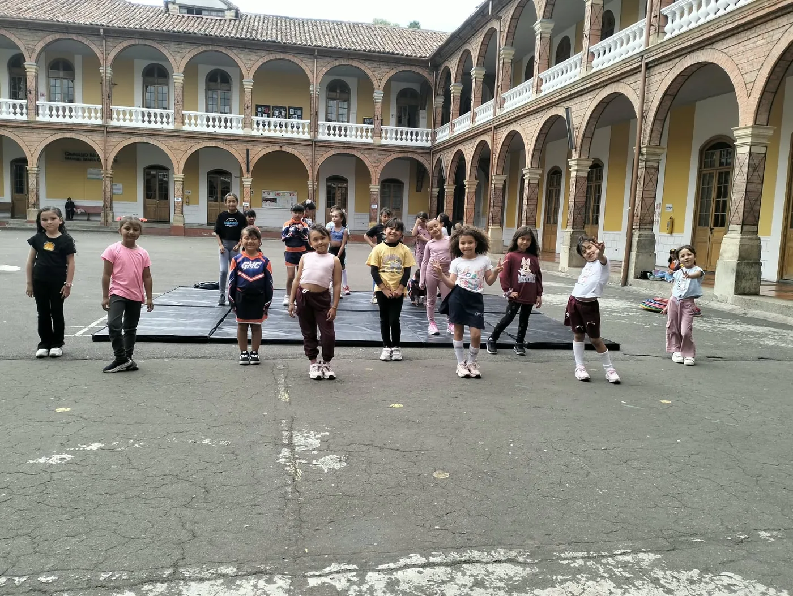
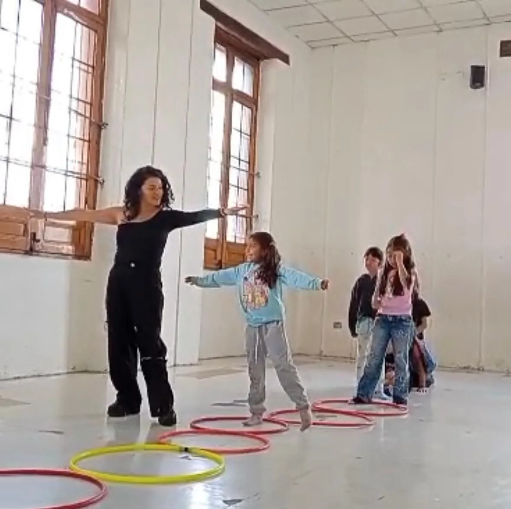
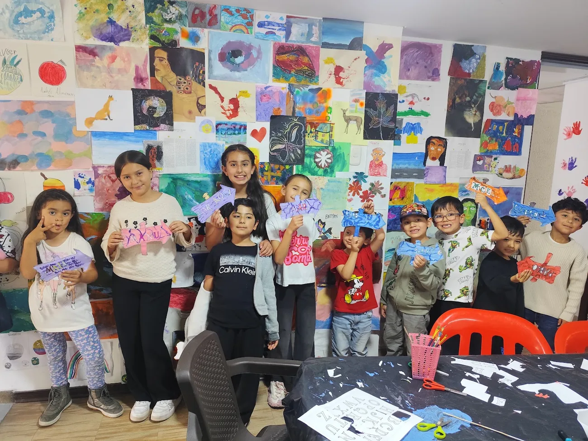
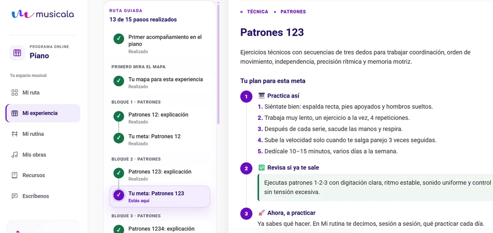
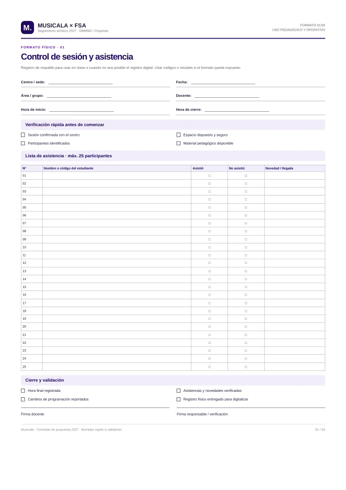
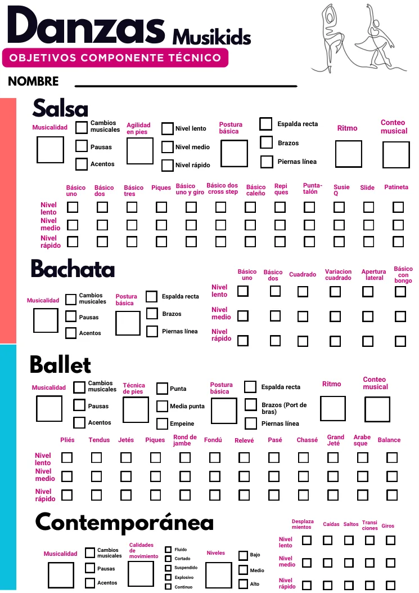

⌂
Liceo
Más valor para su comunidad
Una oferta extracurricular coherente con la vida escolar, con horarios convenientes y actividades de música, danza, artes y teatro.
Musicala presenta una propuesta para desarrollar programas extracurriculares de música, danza, teatro y artes visuales, con la posibilidad de crear grupos representativos del Liceo.
La alianza articula el contexto educativo del Liceo con la experiencia artística de Musicala, con espacios, responsabilidades y operación definidos de común acuerdo.
La propuesta articula la experiencia artística y pedagógica de Musicala con el contexto educativo del Liceo para crear una oferta extracurricular pertinente para sus estudiantes y familias.
Una oferta extracurricular coherente con la vida escolar, con horarios convenientes y actividades de música, danza, artes y teatro.
Diseño y operación de programas artísticos en articulación con la comunidad educativa.
Reglas claras para inscripción, pagos, cuidado de estudiantes, uso de espacios, comunicación y seguimiento desde el inicio.
Somos una escuela de artes que integra música, danza, teatro y artes visuales desde una mirada humana, sensible y creativa.
“Aprender, crear, practicar y compartir.”
Diseñamos experiencias que desarrollan habilidades artísticas y, a la vez, fortalecen expresión, confianza, autonomía, disciplina y trabajo en equipo. Nuestra labor combina docentes, planeación, acompañamiento y seguimiento para que cada grupo avance desde su propio punto de partida.
Programas adaptados a edades, intereses y niveles, con objetivos y actividades progresivas.
Planeación, bitácoras, materiales y momentos para reconocer lo aprendido.



Fotografías de experiencias previas de Musicala en GMMMC/FSA, presentadas como referencias de procesos artísticos y pedagógicos.
La oferta contempla música, danza, teatro y artes visuales, además de la posibilidad de crear grupos representativos. Las edades, niveles, horarios y grupos se definirán según la demanda y los recursos disponibles.
Formación inicial o por niveles, práctica musical y experiencias colectivas.
Instrumentos y docentes: según disponibilidad y diagnóstico.Ritmo, coordinación, memoria coreográfica, expresión y montaje progresivo.
Estilos y grupos: por acordar.Dibujo, color, técnicas y proyectos individuales o colectivos.
Materiales incluidos o por separado: por definir.Voz, cuerpo, imaginación, creación de personajes y trabajo en equipo.
Alcance y muestra final: por acordar.La experiencia extracurricular puede integrar aplicativos, recursos para docentes y materiales físicos que ayuden a practicar, hacer seguimiento y reconocer avances.

AutoMusicala Piano es un ejemplo de recurso digital de Musicala para organizar la práctica y consultar objetivos. Los apoyos digitales para otras disciplinas se definirán según disponibilidad y alcance.

Hojas de trabajo, objetivos por disciplina y listas de seguimiento para acompañar el proceso en clase y facilitar la continuidad sin depender de conexión.

Registros docentes, portafolios y materiales de apoyo para documentar lo trabajado y orientar los siguientes pasos del grupo.
Muestras de procesos artísticos realizados por Musicala en un contexto educativo. La programación para el Liceo se diseñará de manera conjunta.
Grupo de danzas GMMMC 2025 · Musicala
Ver en YouTube ↗Proceso de artes visuales · grupo GMMMC Musicala
Ver en YouTube ↗Los videos y fotografías corresponden a proyectos de GMMMC/FSA. La oferta y las muestras del Liceo se desarrollarán de acuerdo con el alcance que definan ambas instituciones.
La operación no es únicamente asignar docentes. Incluye preparar la oferta, abrir grupos, sostener la calidad y cerrar cada ciclo con información útil.
Diagnóstico de edades e intereses, definición de disciplinas, estructura de grupos, horarios, cupos y condiciones de apertura.
Selección y vinculación de docentes, planeación pedagógica, inducción al contexto escolar y reemplazos según el alcance convenido.
Programación de clases, registro de asistencia, novedades, contacto operativo y coordinación con el enlace designado por el Liceo.
Objetivos por ciclo, bitácoras y retroalimentación; informes con frecuencia y nivel de detalle definidos por ambas partes.
Información de la oferta, proceso de inscripción y comunicación de calendario, pagos, materiales y acuerdos de participación.
Balance de participación y operación; clase abierta, muestra o exposición si se incluye en el calendario y presupuesto aprobados.
Para estructurar la propuesta conjunta, es importante definir espacios, convocatoria, recaudo y coordinación operativa.
Se propone una operación integral a cargo de Musicala y una participación porcentual para el Liceo sobre los ingresos del programa. El porcentaje y su base de cálculo se definirán de común acuerdo.
El Liceo facilitaría espacios en horarios previamente acordados, sujetos a disponibilidad y autorización. Musicala asumiría la operación integral: diseño pedagógico, docentes, inscripciones, recaudo, coordinación, atención a familias y seguimiento. Los ingresos efectivamente recibidos se distribuirían según un porcentaje acordado, con liquidación transparente.
Abrir los grupos priorizados según interés, horarios, espacios disponibles y matrícula mínima.
Revisar participación, costos, asistencia y continuidad; ajustar la operación y el acuerdo económico.
Incorporar nuevos grupos, disciplinas o procesos representativos de acuerdo con la demanda y los recursos.
Ingrese los datos del escenario que desea evaluar. La proyección es mensual y se calcula antes de impuestos y costos no incluidos.
El resultado es una estimación de saldo operativo antes de impuestos, retenciones, comisiones de pago y costos no incluidos. Los costos laborales y tributarios deben validarse antes de formalizar la propuesta.
La proyección es de referencia y debe actualizarse con las tarifas, matrícula, costos y porcentajes que acuerden Musicala y el Liceo.
El proceso inicia con la validación de la demanda y las condiciones de operación. Luego se confirman grupos, horarios, tarifas y equipo docente.
Espacios, comunidad, calendario, responsabilidades, protocolos y modelo de recaudo.
Presentar disciplinas e intereses; medir demanda por edad, franja y disposición de pago.
Definir cupo mínimo, docentes, tarifas, acuerdos, pagos y fechas de inicio.
Mirar matrícula, asistencia, satisfacción, resultados y continuidad antes de escalar.
La puesta en marcha puede avanzar con una definición conjunta del alcance, la convocatoria y las condiciones económicas y operativas.
Si acordamos espacios, convocatoria, un flujo de recaudo transparente y grupos con matrícula mínima viable, Musicala puede asumir la operación artística y construir una oferta extracurricular que crezca con el Liceo.
Musicala × Liceo Los Ángeles Suba
Propuesta de trabajo · versión inicial